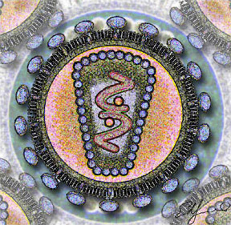

Többször fölmerült már egyes
gyógyszerbotrányok során, hogy milyen hihetetlen ellentmondás pusztán a gyógyszerelõállítás és a
gyógyszerek terjesztése is: a betegségekre gyógyírt adók a betegségbõl élnek, következésképpen
egyszerûen nem áll érdekükben valódi gyógyulást hozni. Bõven elég tünetmentessé tenni a beteget,
de csak annyira, hogy hamarosan újabb gyógyszerek vásárlására (azaz termékvásárlásra)
szoruljon. A gyógyszerüzlet létezõ fogalom, ez viszont nem kis játék, mert a modern világunkat
és az emberiség általános egészségi állapotát dönti romba.
Az eszmefuttatás általában
itt abba is marad. Annyira vadító elképzelés, hogy ebbõl élhetnek emberek, hogy az embernek a
feje is belefájdul a bizonytalanságba. Hallunk történeteket százéves emberekrõl, akik soha,
semmilyen körülmények között nem használtak pirulákat és injekciókat, de a világ furcsaságait
ma már egy vállrándítással el lehet könyvelni.
Magyarország sarkalatos pontja az
népegészség kérdésének: nem kellett hozzá egy évtized, és hazánkban tizenegymillióról
kilencmillióra csökkent a lakosság száma. Egy ideig Guinness-rekordot vezettünk a száz fõre
esõ legtöbb daganatos megbetegedésben is, és a mai napig aggasztó az egészségügy helyzete. Ez
már axióma magyarhonban, de a következményeit nem tudjuk fölmérni.
Döbbenetes eset
volt, amikor néhány évvel ezelõtt egy dr. Gotlieb nevû rákkutató beismerte a CIA nyomozása
során, hogy nagy mennyiségû letális vírust engedett a zairei Kongó-folyóba a népesség
csökkentése céljából. Ez rosszabb helyeken is megüti a genocídium nevû emberiesség elleni
bûntett fogalmát, Gotlieb doktor úr azonban a beismerés után nem büntetést, hanem állást kapott:
az amerikai Nemzeti Rákkutató Intézet vezetõjévé nevezték ki.
Ezzel egybecseng a
Mindent megértettem (J'ai tout compris) nevû francia könyvben
idézett Robert McNamara, aki az Egyesült Államok Kiterjesztett Immunizációs Programjának egyik
tagja:
„Drákói intézkedést kell tennünk a népesség létszámának
csökkentése céljából a lakosság akarata ellenére. A születési arányszámok csökkentése nem
sikerült. Ezért a halálozási rátát kell növelnünk... éhínség és betegségek
útján."
Magyarországon egy év alatt 8%-kal nõtt a csecsemõhalandóság, míg az afrikai
országokban az éhínség és a fertõzõ betegségek minden eddiginél több embert pusztítanak el. H.
C. prof. dr. Peresztegi Sándor a Leleplezõ 2007. IX/2. számában megjelent cikkében kiemeli,
hogy az úgynevezett „Harmadik Világ” függõségét (legyen az pénzügyi vagy akár
egészségügyi) éppen ilyen módszerekkel próbálják fönntartani. Peresztegi úr elismert
szaktekintély, több tudományos cikk és egyetemi tankönyv szerzõje: közel egy évtizedet töltött
védõoltások kifejlesztésével. Tíz évvel ezelõtt havonta nyolcszázhatvannégyezer forintot kapott,
plusz ötszáz százalékos pótlékot, majd erre még kétezer százalékos jutalmat, de õ mégis
fölmondott és az egyetemi pályáját is befejezte: azt mondja, belátott a színfalak mögé.
Fölháborította, amikor megtudta, hogy a hepatitis B elleni vakcinát génmanipulációval
gyártják, amely eredményeképpen fibromyalgiát (krónikus fájdalomszindrómát) és sclerosis
multiplexet okoz.
Láthatjuk, hogy több csoportnak is érdekében állhat a betegségeket
terjedni engedni. Sokat hallhattunk meglepõ könnyedséggel halálosnak mondható betegségekbõl
kigyógyult politikusokról, pénzemberekrõl, ez pedig sokakban fölvetette a lehetõséget, hogy a
manapság rettegett betegségek (mint például a HIV vagy a rák) talán már jól kezelhetõk
lennének. De lehet, hogy jobban megéri nem kezelni õket.
Döbbenetes per zajlott az év
elején az Amerikai Egyesült Államokban, de a média nagyon kínosan ügyelt arra, hogy ne
történjék jelentõs ismertetés errõl semmilyen formában. Samuelt Firski azért perelte be az
Egyesült Államokat, mert állítása szerint „az AIDS-vírus az U. S. Special Virus program
mesterségesen elõállított bioterméke”. Az említett program az USA-ban zajló kísérlet
volt 1962 és 1978 között. A 02 CV 02396 számú esetben Garry Shmipthon bíró végsõ ítéletként
határozatlan idõre elhalasztotta a valódi ítéletet, ahogyan errõl a Látkép 2007/1. számában
beszámolt.
Nem ez az elsõ ilyen típusú per az Államokban. Az 1990-es években egy
elismert jogász, a maga is HIV-pozitív Boyd E. Gravest indított pert azzal a váddal, hogy a
HIV-vírus az izlandi juhok megbetegedését okozó Visna-vírus elemeit tartalmazza. A Visnát
egyébként a náci Németországban fejlesztette ki a berlini Birodalmi Fõlaboratóriumban 1943
májusának elején Gustav Bloominger õrnagy. Döbbenetes, de dr. Robert Gallo 1984 áprilisában az
amerikai szabadalmaztatási hivatalban levédette az AIDS-vírus nevû találmányt a 4.647.773-as
szám alatt. Ki tudja, hogy a mai összeesküvésekkel és álösszeesküvésekkel megõrjített világban
mi igaz és mi nem?
Az viszont biztos, hogy az õssejtkutatásokat Bush és kormánya azzal
az érvvel támadják, hogy egy négynapos, mikroszkópikus méretû emberi embrió is teljes jogú
emberi lény, ezért az erkölcsi normák súlyos megsértése lenne belõlük olyan õssejteket nyerni,
amelyekbõl súlyos betegségek lennének gyógyíthatók (hiszen megfelelõ technikával az õssejtbõl egy
emberi test bármely sejtjét reprodukálni lehetne, így akár sérült sejteket és szöveteket
cserélhetnének ki). Ez az érv azonban meglehetõsen sántít egy olyan országban, amelyben a
magzatelhajtásnak nincsenek különölegesen szigorú szabályai. Az újkori Isaac Newtonnak nevezett
világhíres fizikus, Stephen Hawking teljesen mozgásképtelen, még beszélni is csak egy
számítógépen keresztül tud. 2006 júliusában George W. Bush elnöki jogával megvétózta az emberi
csírákból az õssejtek kinyerését, mire Hawking így reagált:
„Az õssejtek
kutatása lehetõvé teszi azon betegségek gyógyítását, amelyek a jelen korban gyógyíthatatlanok.
Ha az amerikaiak védekeznek ez ellen, tudatosan tönkreteszik az
emberiséget."